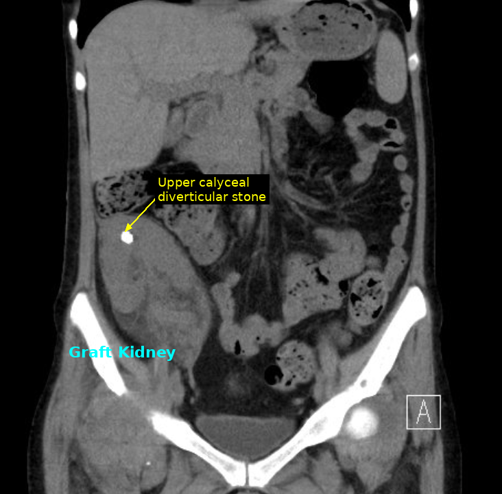

案例摘要
移植腎腎盞憩室結石
迷你經皮穿腎取石術（mini-PCNL）
病史
這位中年女性接受腎臟移植後，終於擺脫了洗腎的日子，重新擁有自己的生活節奏。然而，移植腎的腎盞憩室裡藏著一顆 1.5 公分的結石——這顆石頭隨著捐贈腎臟一起來到她身上（donor-derived stone），並非她自身代謝所生，卻讓她反覆受到泌尿道感染的困擾。為了守護這顆得來不易的新腎，也讓她安心過日子，我們與她討論後決定取出結石。

▲ 腹部 CT 冠狀切面：右髂窩移植腎，上腎盞憩室可見高密度結石（upper calyceal diverticular stone）
處置
手術為迷你經皮穿腎取石術（mini-PCNL），病患採平躺臥式，同時結合超音波與 X 光透視雙定位：超音波幫助我們避開血管，找到安全的穿刺路徑，X 光則讓我們確認器械在憩室內的位置。穿刺成功後，將通道逐步擴張至 16 Fr（約 5 mm），順利完成取石。
手術挑戰
- 輸尿管走向與原生輸尿管不同：無法置入輸尿管導管，不能進行逆行攝影或人造腎水腫
- 移植腎軸向改變：需用都普勒超音波定義無血管穿刺面
- 憩室內導絲不易固定：擴張過程考驗團隊技術穩定性
- 移植腎得來不易，容錯空間極小
✦ 手術順利完成，出血量極少，手術時間 55 分鐘。